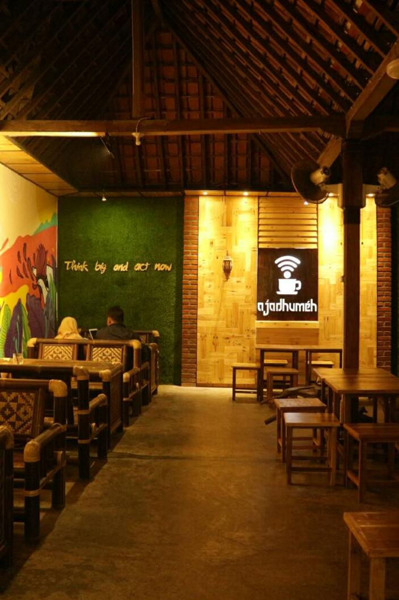

Restoran Ojo Dhumeh
Restoran Ojo Dhumeh di kawasan Samas ini bisa jadi pilihan nongkrong sebentar saat wisatawan dalam perjalanan ke Pantai Selatan. Restoran Ojo Dhumeh di Samas ini unik dan menarik.
Bagaimana tidak, lokasinya saja menempati sebuah rumah kuno yang unik, yang sudah sulit ditemui saat ini. Daun pintu dan jendela yang terbuat dari kayu dengan gaya khas puluhan tahun silam, berpadu cantik dengan langit-langit terbuka khas gaya rumah pedesaan. Sebaliknya, dinding-dindingnya tampak instagenik dengan berbagai ornamen, pada bagian lain penuh dengan lukisan bertema modern perkotaan, sedangkan di sisi lain berupa dinding batu bata ekspos. Rasa-rasanya, artistik adalah kata yang tepat untuk menggambarkan karya yang terpampang di seluruh dinding Restoran Ojo Dhumeh. Kesan artistik masih terasa sampai halaman, di mana wisatawan bisa menikmati menu di gazebo-gazebo bambu dalam berbagai model. Diselingi oleh tanaman-tanaman hias halaman, gazebo ini menambah kesan asri suasana pedesaan Yogyakarta.
Jam Buka Restoran ojo Dhumeh
(senin-jumat) open : 9 pagi - 6 malam
(sabtu minggu) open : 10 pagi - 12 malam